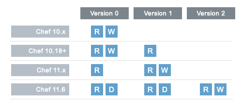

A data bag is a global variable that is stored as JSON data and is accessible from a Chef Server. A data bag is indexed for searching and can be loaded by a recipe or accessed during a search. The contents of a data bag can vary, but they often include sensitive information (such as database passwords).
A data bag can be created in two ways: using Knife or manually. In general, using Knife to create data bags is recommended, but as long as the data bag folders and data bag item JSON files are created correctly, either method is safe and effective.
Knife can be used to create data bags and data bag items when the knife data bag sub-command is run with the create argument and to update the Chef Server with local changes to data bag items with the from_file argument. For example:
$ knife data bag create DATA_BAG_NAME (DATA_BAG_ITEM)
As long as a file is in the correct directory structure, Knife will be able to find the data bag and data bag item with only the name of the data bag and data bag item. For example:
$ knife data bag from file BAG_NAME ITEM_NAME.json
will load the following file:
data_bags/BAG_NAME/ITEM_NAME.json
Continuing the example above, if you are in the “admins” directory and make changes to the file charlie.json, then to upload that change to the Chef Server use the following command:
$ knife data bag from file admins charlie.json
In some cases, such as when Knife is not being run from the root directory for Chef, the full path to the data bag item may be required. For example:
$ knife data bag from file BAG_NAME /path/to/file/ITEM_NAME.json
One or more data bags and data bag items can be created manually under the data_bags directory in the Chef repository. Any method can be used to create the data bag folders and data bag item JSON files. For example:
$ mkdir data_bags/admins
would create a data bag folder named “admins”. The equivalent command for using Knife is:
$ knife data bag create admins
A data bag item can be created manually in the same way as the data bag, but by also specifying the file name for the data bag item (this example is using the Unix Visual Editor):
$ vi data_bags/admins/charlie.json
would create a data bag item named “charlie.json” under the “admins” sub-directory in the data_bags directory of the Chef repository. The equivalent command for using Knife is:
$ knife data bag create admins charlie
When the Chef repository is cloned from github, the following occurs:
The data_bags directory can be placed under version source control.
When deploying from a private repository using a data bag, use the deploy_key option to ensure the private key is present:
{
"id": "my_app",
... (truncated) ...
"deploy_key": "ssh_private_key"
}
where ssh_private_key is the same SSH private key as used with a private git repository and the new lines converted to \n.
All data bags are stored in the data_bags directory of the Chef repository. This directory structure is understood by Knife so that the full path does not need to be entered when working with data bags from the command line. An example of the data_bags directory structure:
data_bags
|_admins
|_charlie.json
|_bob.json
|_tom.json
|_db_users
|_charlie.json
|_bob.json
|_sarah.json
|_db_config
|_small.json
|_medium.json
|_large.json
|_standard_packages.json
|_global_shell_settings.json
where _admins, _db_users, _db_config, _standard_packages, and _global_shell_settings are the names of individual data bags and all of the files that end with .json are the individual data bag items.
A data bag is a container of related data bag items, where each individual data bag item is a JSON file. The only structural requirement of a data bag item is that it must have an id:
{
"id": "ITEM_NAME"
"key": "value"
}
where key and value are the key:value pair for each additional attribute within the data bag item. Knife can load a data bag item by specifying the name of the data bag to which the item belongs and then the filename of the data bag item.
The contents of a data bag can be encrypted using shared secret encryption. This allows a data bag to store confidential information (such as a database password) or to be managed in a source control system (without plain-text data appearing in revision history).
The manner by which a data bag is encrypted depends on the version of Chef. See the following:
where R is read, W is write, and D is disable. (Disabling support for older encryption version formats will be in the next version of Chef and, if desired, will require a configuration change.)
For version 0 (default, through Chef 10.18):
For version 1 (default, starting with Chef 11.x):
For version 2 (available, starting with Chef 11.6):
Knife can encrypt and decrypt data when the knife data bag sub-command is run with the create, edit, from file, or show arguments and the following options:
| Option | Description |
|---|---|
| --secret SECRET | The encryption key that is used for values contained within a data bag. |
| --secret-file FILE | The path to the file that contains the encryption key. |
Encrypting a data bag requires a secret key. A secret key can be created in any number of ways. For example, OpenSSL can be used to generate a random number, which can then be used as the secret key:
$ openssl rand -base64 512 > encrypted_data_bag_secret
where encrypted_data_bag_secret is the name of the file which will contain the secret key. For example, to create a secret key named “my_secret_key”:
$ openssl rand -base64 512 > my_secret_key
A data bag can be encrypted using a Knife command similar to:
$ knife data bag create passwords mysql --secret-file /tmp/my_data_bag_key
where “passwords” is the name of the data bag, “mysql” is the name of the data bag item, and “/tmp/my_data_bag_key” is the path to the location in which the file that contains the secret-key is located. Knife will ask for user credentials before the encrypted data bag item is saved.
When the contents of a data bag are encrypted, they will not be readable until they are decrypted. Encryption can be verified with a Knife command similar to:
$ knife data bag create passwords mysql
where “passwords” is the name of the data bag and “mysql” is the name of the data bag item. This will return something similar to:
{
"id": "mysql",
"pass": "trywgFA6R70NO28PNhMpGhEvKBZuxouemnbnAUQsUyo=\n",
"user": "e/p+8WJYVHY9fHcEgAAReg==\n"
}
An encrypted data bag item can be decrypted with a Knife command similar to:
$ knife data bag show --secret-file /tmp/my_data_bag_key passwords mysql
that will return JSON output similar to:
{
"id": "mysql",
"pass": "thesecret123",
"user": "fred"
}
An encryption key can also be stored in an alternate file on the nodes that need it and specify the path location to the file inside an attribute; however, EncryptedDataBagItem.load expects to see the actual secret as the third argument, rather than a path to the secret file. In this case, you can use EncryptedDataBagItem.load_secret to slurp the secret file contents and then pass them:
# inside your attribute file:
# default[:mysql][:secretpath] = "C:\\chef\\any_secret_filename"
#
# inside your recipe:
# look for secret in file pointed to by mysql attribute :secretpath
mysql_secret = Chef::EncryptedDataBagItem.load_secret("#{node[:mysql][:secretpath]}")
mysql_creds = Chef::EncryptedDataBagItem.load("passwords", "mysql", mysql_secret)
mysql_creds["pass"] # will be decrypted
To demonstrate the use of encrypted data bags on a node, we’ll start by copying the secret_key file to an example node using scp and moving it to /etc/chef/encrypted_data_bag_secret:
scp ./secret_key $MY_NODE_IP:~/
ssh $MY_NODE_IP
sudo mv ./secret_key /etc/chef/encrypted_data_bag_secret
The knife bootstrap sub-command supports the encrypted_data_bag_secret setting in knife.rb. You will want to add this line:
encrypted_data_bag_secret '/path/to/your/data_bag_key'
And change /path/to/your/data_bag_key to the location of where the data bag key is located. When you run knife bootstrap afterwards it automatically adds this line to the client.rb for the node you are bootstrapping and copies the key over.
Next, we’ll create a recipe that will log the decrypted values for demonstration purposes (if these were real secrets, you would want to avoid logging them). Use Knife and run the following:
$ knife cookbook create edb_demo
Then, edit cookbooks/edb_demo/recipes/default.rb so that it contains the following:
# cookbooks/edb_demo/recipes/default.rb
passwords = Chef::EncryptedDataBagItem.load("prod", "passwords")
mysql = passwords["mysql"]
Chef::Log.info("The mysql password is: '#{mysql}'")
Finally, upload the cookbook and run chef-client on the node. You should see something like this:
$ knife cookbook upload edb_demo
# output clipped
knife ssh name:i-8a436fe5 -a ec2.public_hostname 'sudo chef-client'
INFO: *** Chef 0.10.0 ***
INFO: Run List is [recipe[edb_demo]]
INFO: Run List expands to [edb_demo]
INFO: Starting Chef Run for i-8a436fe5
INFO: Loading cookbooks [edb_demo]
INFO: The mysql password is: 'open-sesame-123'
INFO: Chef Run complete in 3.122228 seconds
INFO: Running report handlers
INFO: Report handlers complete
As you can see, the recipe was able to decrypt the values in the encrypted data bag. It did so by using the shared secret located in the default location of /etc/chef/encrypted_data_bag_secret.
Data bags can be accessed in the following ways:
A data bag is a global variable that is stored as JSON data and is accessible from a Chef Server. A data bag is indexed for searching and can be loaded by a recipe or accessed during a search. The contents of a data bag can vary, but they often include sensitive information (such as database passwords).
Any search for a data bag (or a data bag item) must specify the name of the data bag and then provide the search query string that will be used during the search. For example, to use Knife to search within a data bag named “admin_data” across all items, except for the “admin_users” item, enter the following:
$ knife search admin_data "(NOT id:admin_users)"
Or, to include the same search query in a recipe, use a code block similar to:
search(:admin_data, "NOT id:admin_users")
It may not be possible to know which data bag items will be needed. It may be necessary to load everything in a data bag (but not know what “everything” is). Using a search query is the ideal way to deal with that ambiguity, yet still ensure that all of the required data is returned. The following examples show how a recipe can use a series of search queries to search within a data bag named “admins”. For example, to find every administrator:
search(:admins, "*:*")
Or to search for an administrator named “charlie”:
search(:admins, "id:charlie")
Or to search for an administrator with a group identifier of “ops”:
search(:admins, "gid:ops")
Or to search for an administrator whose name begins with the letter “c”:
search(:admins, "id:c*")
Data bag items that are returned by a search query can be used as if they were a hash. For example:
charlie = search(:admins, "id:charlie").first
# => variable 'charlie' is set to the charlie data bag item
charlie["gid"]
# => "ops"
charlie["shell"]
# => "/bin/zsh"
The following recipe can be used to create a user for each administrator by loading all of the items from the “admins” data bag, looping through each admin in the data bag, and then creating a user resource so that each of those admins exist:
admins = data_bag('admins')
admins.each do |login|
admin = data_bag_item('admins', login)
home = "/home/#{login}"
user(login) do
uid admin['uid']
gid admin['gid']
shell admin['shell']
comment admin['comment']
home home
supports :manage_home => true
end
end
And then the same recipe, modified to load administrators using a search query (and using an array to store the results of the search query):
admins = []
search(:admins, "*:*") do |admin|
login = admin["id"]
admins << login
home = "/home/#{login}"
user(login) do
uid admin['uid']
gid admin['gid']
shell admin['shell']
comment admin['comment']
home home
supports :manage_home => true
end
end
In some situations, it may not be possible to know exactly which data bags (or data bag items) should be used. Or in other situations, loading all of the data in a data bag might be the desired result. Use the search index to find data that is stored in one or more data bags in the Chef environment and use the various search patterns to fine-tune the search queries. Any data that is returned as the result of a search query can then be loaded by a recipe. Use the following syntax when searching for data in a data bag:
search(name_of_data_bag, search_query)
For example, to find every admin in a data bag named “admins”:
search(:admins, "*:*")
Or, to search for an administrator with an ID of “charlie”:
search(:admins, "id:charlie")
Or, to search for all administrators with a group ID of “ops”:
search(:admins, "gid:ops")
Or, to search for all administrators with an ID that begins with the letter “c”:
search(:admins, "id:c*")
Once returned, this data can be used as if it were a hash. For example:
charlie = search(:admins, "id:charlie").first
# => variable 'charlie' is set to the charlie data bag item
charlie["gid"]
# => "ops"
charlie["shell"]
# => "/bin/ssh"
Any search for a data bag (or a data bag item) must specify the name of the data bag and then provide the search query string that will be used during the search. For example, to use Knife to search within a data bag named “admin_data” across all items, except for the “admin_users” item, enter the following:
$ knife search admin_data "(NOT id:admin_users)"
Or, to include the same search query in a recipe, use a code block similar to:
search(:admin_data, "NOT id:admin_users")
It may not be possible to know which data bag items will be needed. It may be necessary to load everything in a data bag (but not know what “everything” is). Using a search query is the ideal way to deal with that ambiguity, yet still ensure that all of the required data is returned. The following examples show how a recipe can use a series of search queries to search within a data bag named “admins”. For example, to find every administrator:
search(:admins, "*:*")
Or to search for an administrator named “charlie”:
search(:admins, "id:charlie")
Or to search for an administrator with a group identifier of “ops”:
search(:admins, "gid:ops")
Or to search for an administrator whose name begins with the letter “c”:
search(:admins, "id:c*")
Data bag items that are returned by a search query can be used as if they were a hash. For example:
charlie = search(:admins, "id:charlie").first
# => variable 'charlie' is set to the charlie data bag item
charlie["gid"]
# => "ops"
charlie["shell"]
# => "/bin/zsh"
The following recipe can be used to create a user for each administrator by loading all of the items from the “admins” data bag, looping through each admin in the data bag, and then creating a user resource so that each of those admins exist:
admins = data_bag('admins')
admins.each do |login|
admin = data_bag_item('admins', login)
home = "/home/#{login}"
user(login) do
uid admin['uid']
gid admin['gid']
shell admin['shell']
comment admin['comment']
home home
supports :manage_home => true
end
end
And then the same recipe, modified to load administrators using a search query (and using an array to store the results of the search query):
admins = []
search(:admins, "*:*") do |admin|
login = admin["id"]
admins << login
home = "/home/#{login}"
user(login) do
uid admin['uid']
gid admin['gid']
shell admin['shell']
comment admin['comment']
home home
supports :manage_home => true
end
end
The following example shows how to use the search index to find all of the items in a data bag (called “admins” that stores the user data for each system administrator), add each data bag item to an array, ensure that each data bag item exists as a user resource, and then to create a security group to which each of the data bag items belongs.
# An empty array to which we'll add the admins' logins as we go.
admins = []
# search for all items in the 'admins' data bag and loop over them
search(:admins, "*:*") do |admin|
# Set `login` to the id of the data bag item
login = admin["id"]
# build up the list of the admins logins
admins << login
home = "/home/#{login}"
# for each admin in the data bag, make a user resource
# to ensure they exist
user(login) do
uid admin['uid']
gid admin['gid']
shell admin['shell']
comment admin['comment']
home home
supports :manage_home => true
end
end
# Create an "admins" group on the system
# You might use this group in the /etc/sudoers file
# to provide sudo access to the admins
group "admins" do
gid 999
members admins
end
Values that are stored in a data bag are global to the organization and are available to any environment. There are two main strategies that can be used to store per-environment data within a data bag: by using a top-level key that corresponds to the environment or by using separate items for each environment.
A data bag that is storing a top-level key for an environment might look something like this:
{
"id": "some_data_bag_item",
"production" : {
# Hash with all your data here
},
"testing" : {
# Hash with all your data here
}
}
When using the data bag in a recipe, that data can be accessed from a recipe using code similar to:
bag_item[node.chef_environment]["some_other_key"]
The other approach is to use separate items for each environment. Depending on the amount of data, it may all fit nicely within a single item. If this is the case, then creating different items for each environment may be a simple approach to providing per-environment values within a data bag. However, this approach is more time-consuming and may not scale to very large environments or when the data must be stored in many data bag items.
Data bags can be accessed by a recipe in the following ways:
The recipe DSL provides access to data bags and data bag items with the following methods:
The data_bag method returns an array with a key for each of the data bag items that are found in the data bag. For example, a data bag named “admins” with a single data bag item named “charlie” could be loaded with:
data_bag("admins")
to return this:
# => ["charlie"]
To load the contents of the data bag item named “charlie”:
data_bag_item('admins', 'charlie')
to return something like this:
# => {"comment"=>"Crazy Charlie", "gid"=>1005, "id"=>"charlie", "uid"=>1005, "shell"=>"/bin/zsh"}
Creating and editing the contents of a data bag or a data bag item from a recipe is not recommended. The recommended method of updating a data bag or a data bag item is to use Knife and the knife data bag sub-command. If this action must be done from a recipe, please note the following:
and then take steps to ensure that any subsequent actions are done carefully. The following examples show how a recipe can be used to create and edit the contents of a data bag or a data bag item using the Chef::DataBag and Chef::DataBagItem objects.
To create a data bag from a recipe:
users = Chef::DataBag.new
users.name("users")
users.save
To create a data bag item from a recipe:
sam = {
"id" => "sam",
"Full Name" => "Sammy",
"shell" => "/bin/zsh"
}
databag_item = Chef::DataBagItem.new
databag_item.data_bag("users")
databag_item.raw_data = sam
databag_item.save
To edit the contents of a data bag item from a recipe:
sam = data_bag_item("users", "sam")
sam["Full Name"] = "Samantha"
sam.save
A recipe can access encrypted data bag items as long as the recipe is running on a node that has access to the shared-key that is required to decrypt the data. A secret can be specified by using the Chef::EncryptedDataBagItem.load method. For example:
mysql_creds = Chef::EncryptedDataBagItem.load("passwords", "mysql", secret_key)
mysql_creds["pass"] # will be decrypted
where “secret_key” is the argument that specifies the location of the file that contains the encryption key. An encryption key can be stored in a file on the nodes that need it and then configured so that Chef knows where to look using the Chef::Config[:encrypted_data_bag_secret] method, which defaults to /etc/chef/encrypted_data_bag_secret. When the default location is used, the argument that specifies the secret key file location is assumed to be the default and does not need to be explicitly specified in the recipe. For example:
mysql_creds = Chef::EncryptedDataBagItem.load("passwords", "mysql") # no secret_key
mysql_creds["pass"] # will be decrypted
Chef can create users on systems based on the contents of a data bag. For example, a data bag named “admins” can contain a data bag item for each of the administrators that will manage the various systems that Chef is maintaining. A recipe can load the data bag items and then create user accounts on the target system with code similar to the following:
# Load the keys of the items in the 'admins' data bag
admins = data_bag('admins')
admins.each do |login|
# This causes a round-trip to the server for each admin in the data bag
admin = data_bag_item('admins', login)
homedir = "/home/#{login}"
# for each admin in the data bag, make a user resource
# to ensure they exist
user(login) do
uid admin['uid']
gid admin['gid']
shell admin['shell']
comment admin['comment']
home homedir
supports :manage_home => true
end
end
# Create an "admins" group on the system
# You might use this group in the /etc/sudoers file
# to provide sudo access to the admins
group "admins" do
gid 999
members admins
end
chef-solo can load data from a data bag as long as the contents of that data bag are accessible from a directory structure that exists on the same machine as chef-solo. The location of this directory is configurable using the data_bag_path option in the solo.rb file. The name of each sub-directory corresponds to a data bag and each JSON file within a sub-directory corresponds to a data bag item. Search is not available in recipes when they are run with chef-solo; use the data_bag() and data_bag_item() functions to access data bags and data bag items.
Note
Use the chef-solo-search cookbook library (developed by Opscode community member “edelight” and available from github) to add data bag search capabilities to a chef-solo environment: https://github.com/edelight/chef-solo-search.